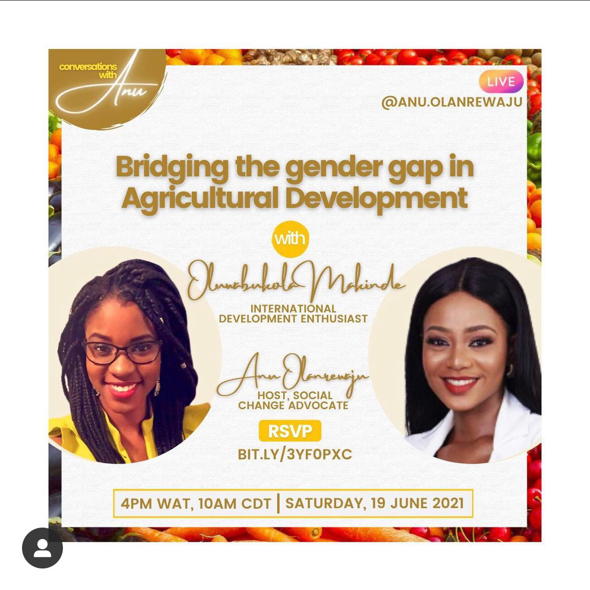
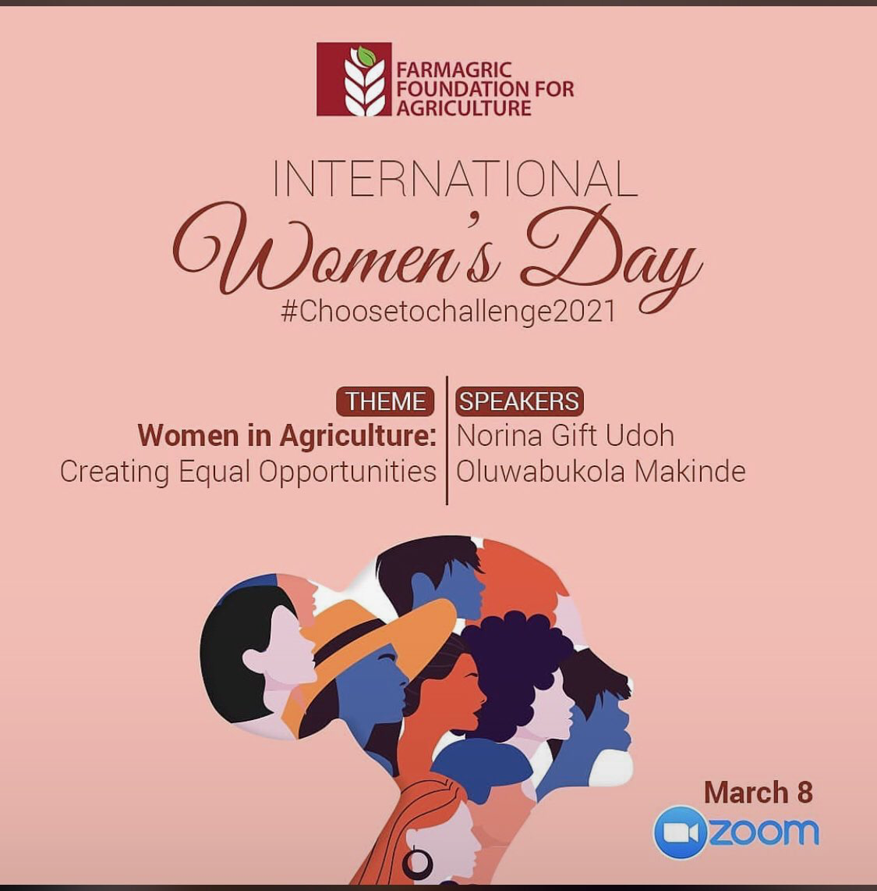
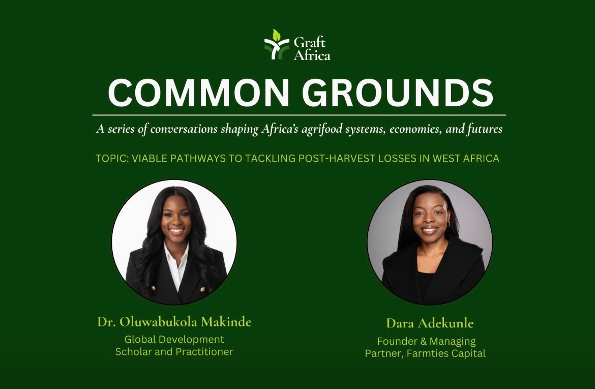
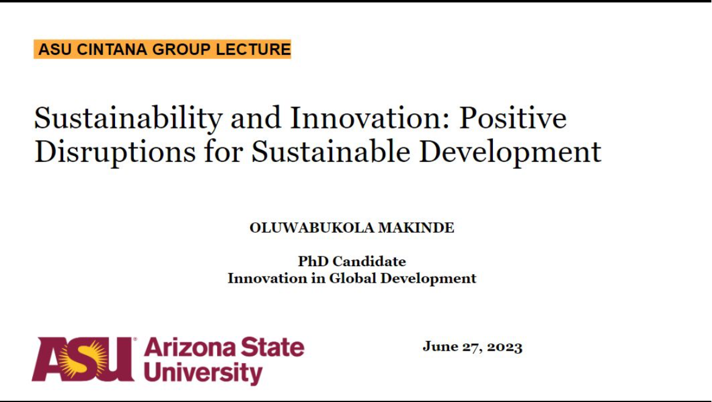
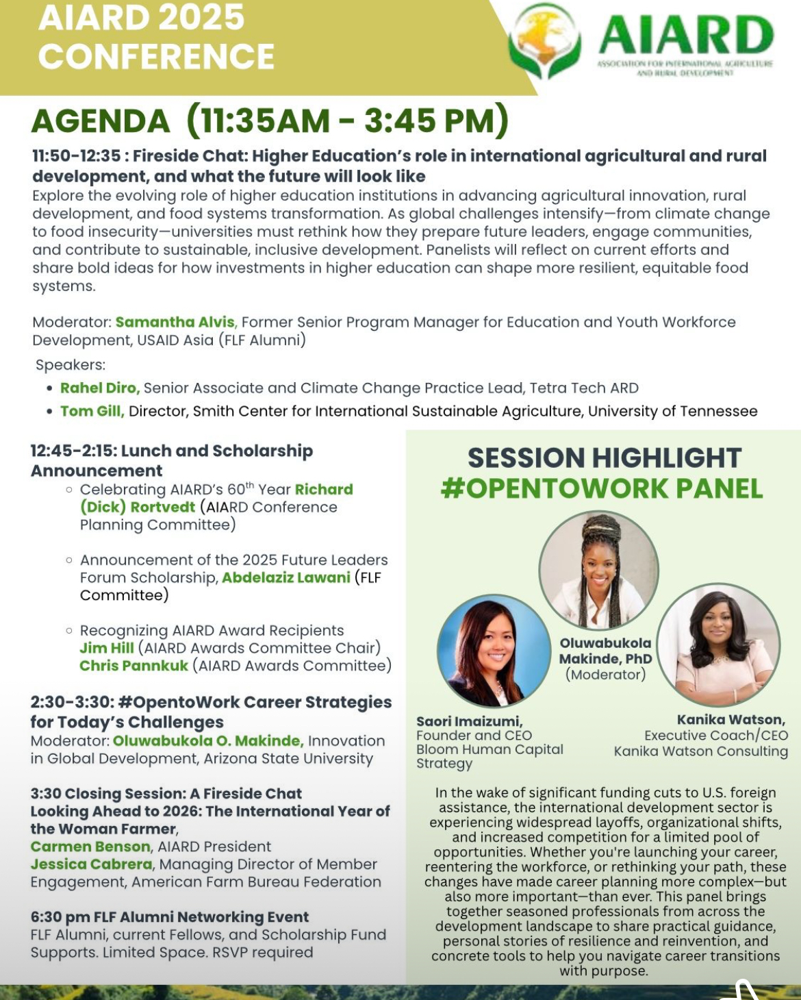
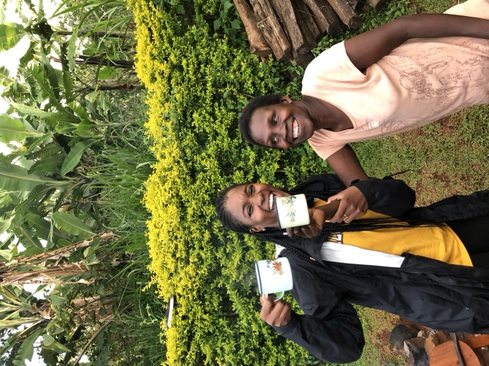
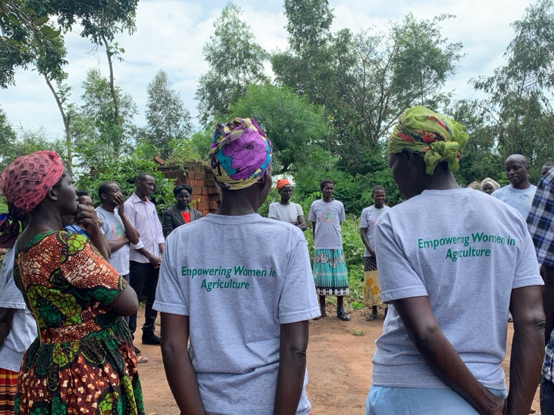
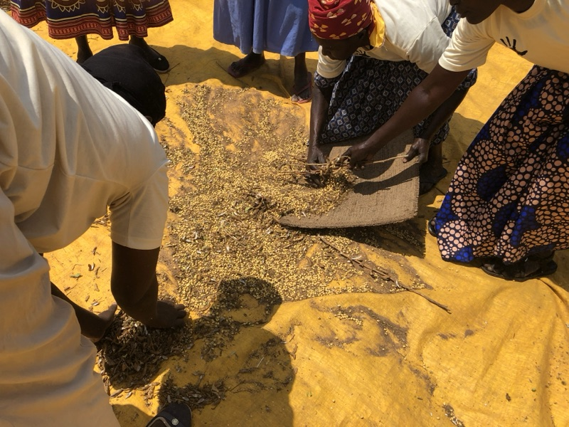
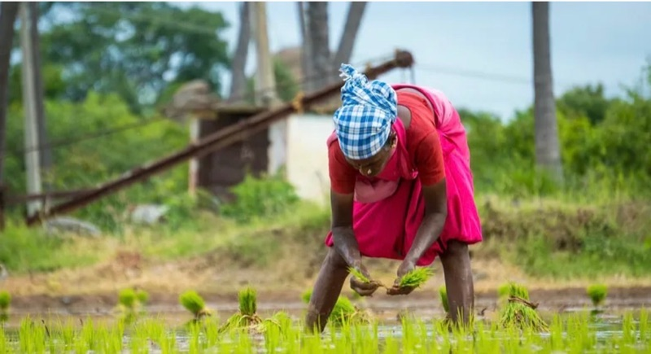
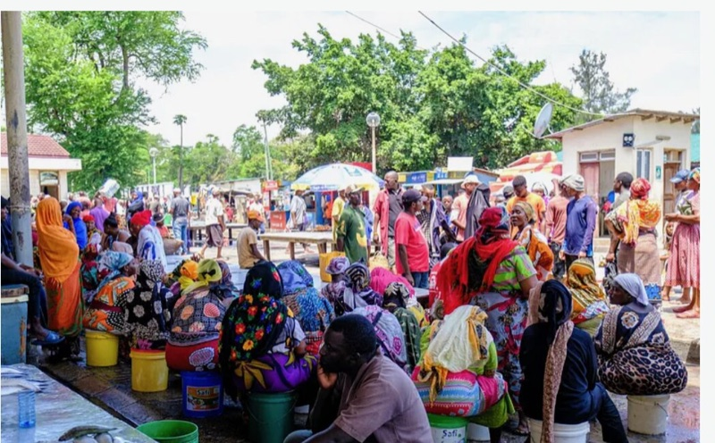

Designing to Elicit Future Affective Potential: Café 2057
Futures
This paper is an approach for extending the use of creative arts-based methods to co-create outputs about futures research.
Driving inclusive development through evidence-based innovative solutions and strategic partnerships
I work at the intersection of agricultural development, women's empowerment, policy, and social impact. With expertise in program design, stakeholder engagement, and cross-cultural collaboration, I help organizations and governments achieve their mission-driven goals.
Work With MeI grew up in Nigeria, an agrarian country where agriculture contributes nearly 60% to the economy. At the time, I didn’t fully grasp what that meant. But as I began to study global systems and development, I realized that agriculture isn't just about food. It's synonymous with power, equity, resilience, and the future of humanity, and this realization shapes the work I do today.
I am deeply passionate about transforming agricultural systems to be inclusive, sustainable, and community-driven. My work centers the voices of women and rural communities. They are not just beneficiaries, but are crucial and active agents of change in ensuring the sustenance of humanity.
With a background in international development, agricultural innovation, and policy research, I use systems thinking to design conceptual frameworks
and interventions that address the root causes of inequality. At the core of my work - developing policy frameworks, managing research projects,
teaching in classrooms or facilitating local engagement, I approach every project with detail, purpose, and heart.
This is not just work to me, I believe it is a calling. It is rooted in my story and sustained by a belief that we can build a more equitable world
from the soil up!
I’m a researcher, strategist and development practitioner passionate about reimagining how stories of Africa’s growth and resilience are told. I have over five years of experience leading interdisciplinary, policy-relevant research at the intersection of agriculture, gender equity, and rural development. My work focuses on bridging research, policy, and practice to create lasting impact in the development space.
Skilled in both qualitative and quantitative research, I use tools like R, ATALS.ti and Scenario planning workshops to unpack data and envision alternative futures that expand access to agricultural innovation for rural farmers.
I earned my Ph.D. in Innovation in Global Development from Arizona State University, where my research examined how farmer cooperatives as local institutions drive inclusive agricultural transformation in Sub-Saharan Africa from the bottom-up.
I have supported and coordinated government-funded initiatives across the U.S. Sub-Saharan Africa and Latin America, helping teams design results frameworks that strengthen local institutions in rural agriculture. At the heart of it all is my commitment to equity-centered research, where innovation reflects community realities, and where impact is measured not just in numbers, but in transformed lives.
Futures
This paper is an approach for extending the use of creative arts-based methods to co-create outputs about futures research.
Arizona State University
Doctoral Dissertation examines the role of farmer cooperatives in fostering inclusive agricultural Development with a focus on individual and collective women’s empowerment.
Presented at the 4S/ESOCITE 2022 Preliminary Conference annual meeting of the Society
One of the goals of this project is to activate increased empathy for how others anticipate and act on/frame emerging technological futures in the food system.
First Edition, AlphaZulu Advocates. Daniella Tilbury Press, 2022.
I authored chapter five of this book which focuses on addressing gender inequality in the agricultural sector. While efforts are geared towards productivity, a move towards engaging a broader view of agricultural food systems that recognizes women’s priorities and distinct role is important.
Presented at the ISA 2022 63rd Annual Convention, Nashville Tennessee
A presentation on how some of the factors such as education, age, marital status affect adoption of technologies among female farmers.
Institute for Social Science Research, Arizona State University
Findings show that Agricultural productivity is higher in female headed households than male headed households as a result of more autonomy for decision-making and control of resources.
Co-presented virtually at the annual IEEE ISTAS20 Symposium, October 2020
This paper provided a comparative analysis of the successes and failures of policies and mechanisms that integrate the role of women and youth in post conflict setting in Afghanistan and Rwanda.
OakTrust
A study conducted by graduate students at The George Bush School of Government and Public Service in partnership with The Bryan College Station Habitat for Humanity. As a result of the completion of this project, the main beneficiaries are current and future HFH homeowners.
I provide strategic consulting services to organizations working in global development, helping them design effective programs, build strong partnerships, and achieve measurable impact.
Develop comprehensive program frameworks aligned with organizational goals and local contexts.
Facilitate partnerships between governments, NGOs, communities, and private sector actors.
Design robust M&E systems that demonstrate effectiveness to funders and stakeholders.
Deliver training through workshops to strengthen teams and empower local leadership/communities.
Designed and delivered a project-based curriculum focused on developing actionable sustainability campaigns across key sectors, including fast fashion, food systems, and renewable energy, emphasizing applied analysis and strategic communication.
Supported 27 students in designing individual research proposals, with a focus on research design, epistemology, and methodological rigor for end-of-semester projects.
Designed and taught an intensive four-week course examining sustainability across environmental science, business, community, and global development, integrating experiential activities to assess institutional and organizational roles in sustainable transitions.
Assisted in mentoring 78 students through course objectives, providing instructional support, progress review, and guidance on futures-oriented analysis.
Supported instructional delivery and student mentorship, contributing to assessment, feedback, and futures-based critical reflection.
Worked with students on applied policy projects examining the relationships between development theory and practice across sectors such as health, education, and food systems.
The Graduate College Fellowship is a merit-based award to support degree completion of outstanding graduate students for their last semester of a Doctoral or terminal campus immersion degree.
The Tripke Travel Grant is a merit-based award to support graduate students for experiential travel furthering their studies.
The Graduate Education Research Support Program was created in 1980 through a joint venture of the Graduate and Professional Student Association and the Office of the Vice President of Research and Economic Affairs. One purpose of the GRSP is to promote excellence in Graduate education at Arizona State University.
Immersive 3 months Summer Fellowship in Uganga.
Honorable mention for graduate research poster contest- proposal category $400 cash gift.
A highly competitive, merit-based award to support recruitment and professional development of outstanding incoming underrepresented masters and doctoral students enrolling in a campus immersion degree program.
This award recognizes outstanding student capstone research in the field of public administration and/or public policy.
SUN Award is awarded to individuals serving university needs. It encompasses exemplary service, supporting student success, and sustainability efforts.






Telling stories to reveal elements and images of an event is one of the most powerful tools for interactive engagement anywhere. A…

In my last write-up, I promised to share my experience with the women farmers here in Uganda. So here we go! It’s been a…

Okay, y’all, I never thought I would get excited writing but here I am documenting my experiences through words, and I’m glad I…

In 2021, while conducting a literature review on women’s economic empowerment in agriculture in Sub-Saharan Africa, I…

I remember sitting with a group of women farmers in rural Uganda in 2022. We had been talking about access, access to…
Interested in connecting and working with fellow professionals, potential collaborators, and organizations to create positive change.